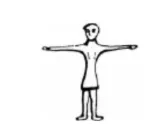
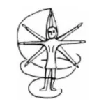

Rune Grimoire
Hagaiaz
Tree, Element, and Deity
Tree: ash/yew
Element: ice
Deity: Urd
Meaning: ice or hail; transformation
Names Across Dialects
| Dialect | Word | Meaning |
|---|---|---|
| Proto-Germanic | hagalaz | Hail, egg |
| Gothic | hagl | Hail |
| Old English | hægl | Hail |
| Old Norse | hagall | Hail |
| Icelandic | Hagall | Hail |
| Norwegian | Hagall, Hagl | Hail |
Phonetic value: h
Esoteric interpretation: icy egg or seed of primal cosmic life and pattern
Ideographic interpretation: the connection of two standing beams (realms of being) by a crossbar in half-timbered building technique, or the primal snowflake pattern
The Cosmic Ice Egg
Hagalaz is the cosmic ice egg filled with crystallized magickal power and cosmic pattern. The hailstone symbolizes the yeasty rime "egg" containing the seed of Ymir, the primal rime-giant. Ymir was formed from the juncture of world fire (Muspellsheimr) and world ice (Niflheimr). This is the complete potential multiversal paradigm, the egg of manifestation.
The Old Icelandic Rune Poem describes it: "Hagall is a cold grain and a shower of sleet and a sickness of snakes."
The Framework of the World
The H-rune is the mystery of the framework of the world. It defines the primal form of the multiverse. The snowflake forms itself along the sixfold pattern of an ancient holy sign, which came to replace the Elder form in the Younger Futhark.
Hagalaz is the complete model containing the potential energy of neutral power in the multiverse, born from the dynamic, generating, evolving unity of fire (energy) and ice (antimatter). The H-rune describes the eternal cosmic harmony.
The Sacred Nine and the Rune Mother
In Germanic religion and mythology, nine is the most sacred and mysterious of numbers. There are nine worlds in Yggdrasill, Odin hung for nine nights on the World-Tree to gain the runes, and the god Heimdallr was born of nine mothers. Nine is the number of completeness that leads to a birth of greater power and productivity.
Hagalaz is the rune mother. All runic forms may be derived from the sixfold Hagalaz when it is placed within a solid figure. The H-rune embodies ongoing evolution within a fixed framework.
Protection and Banishment
Hagalaz is a stave of protection and banishment. Its complete and harmonious nature promotes special security and prevents the intrusion of disharmonious elements. Among the most potent binding runes, it is invaluable for Vardlokkur (warding magick).
Deities
Heimdallr: Watchman of the gods, guardian of the Rainbow Bridge between realms.
Mordgud: Servant of Hel, guarding the Ice Bridge between living and dead. Associated with Samhain.
Urd: Most powerful Norn, possessing all knowledge of the past.
Modern Relevance
Hagalaz signifies hail and dangerous weather, indicating unavoidable change. It calls for tenacity and protection against forces beyond one's control, warning of potentially unsafe situations.
Rune Character
This rune represents hailstones. Involuntary sacrifice with no reward; a rune of suffering and injustice. A rune of destruction, disaster, and violence. Mainly used in baneful magick, sending destruction in the form of whatever runes are used with it, delivering violent loss and pain. Hagl is a rune of completion and the number nine. Nine is the greatest German number of power and is also a number of Satan, as it equals the number of the main chakras.
Keywords
- Cosmic pattern, framework
- Completion
- Union (cosmic egg)
- Evolution (within framework)
- Protection
Galdr
hagalaz hagalaz hagalaz
hu ha hi he ho
hug hag hig heg hog
oh eh ih ah uh
Stadha
I. Basic posture: Stand upright in a cross position with arms parallel to the ground and palms pointed outward.

II. Runic combination ritual: A complete ritual of great power when properly performed.
- Stand in cross position. Face north, take nine full inhalations, then turn with the sun (north to east), singing "hu ha hi he ho." Do this in all four directions, ending again in the north. May be performed from the east during daylight hours or at sunrise.
- Nauthiz stadha: "nu na ni ne no" (first turn), "hu ha hi he ho" (second turn)
- Ehwaz stadha: sustained "e" sound (first turn), "hu ha hi he ho" (second turn)
- Isa stadha: sustained "i" sound (first turn), "hu ha hi he ho" (second turn)
- Mannaz stadha: sustained "m" sound (first turn), "hu ha hi he ho" (second turn)
- Tiwaz stadha: "Tiwaz Tiwaz Tiwaz" (first turn), "hu ha hi he ho" (second turn)
- Gebo stadha: "gu ga gi ge go" (first turn), "hu ha hi he ho" (second turn)
During the course of this exercise a total of 13 turns is made. Maintain an emptiness of consciousness throughout. This exercise facilitates the workings of all the inner hvel (energy centers).

Magickal Workings
- Completeness and balance of power
- Mystical and numinous experience and knowledge
- Evolutionary, becoming operations
- Protection
Baneful Applications
Mainly used in baneful magick, sending destruction in the form of whatever runes are used with it, delivering violent loss and pain. Involuntary sacrifice with no reward. A rune of suffering, injustice, destruction, disaster, and violence.
Stadhagaldr Rites
Increase in Magickal Power
Hagalaz activates the cosmic framework within the vitki:
Rune-might work in me.
See Stadhagaldr (Posture Magick) for the full rite.
Rite of Need
Hagalaz invokes the wight of the World-wood:
Wight of the World-wood give good speed and help!
I take up the runes,
I take up my need!
See Stadhagaldr (Posture Magick) for the full rite.